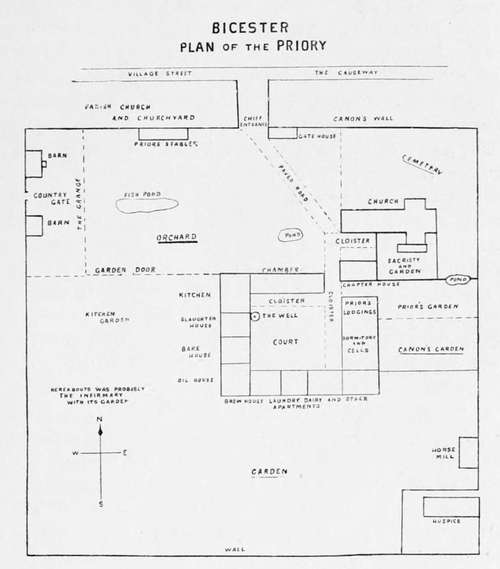

Monastic Gardening. Part 5
Description
This section is from the book "A History Of Gardening In England", by Alicia Amherst. Also available from Amazon: A History Of Gardening In England.
Monastic Gardening. Part 5
Expenses
Arrears of preceding year, 68s.—for mustard seed, 7s. 4d.—to the Almoner, 12s.—for milk in Advent and Ouinquagesima, 4s. 3d.—for planting garlic and beans and for weeding, 2s.—to workmen hired at times, 15d.—in medicines of the gardener, 2s., in the presence of the Lord Prior, and at St. Leonards and elsewhere, 3s. 2d.—in gifts to the servants at Christmas, 18d.—in the repair of the houses, utensils, " schelvis," and boards bought, 3s. 4d.—in the boots of the gardener, 12d.—to Thomas the servant for stipend, 12s.—to John the servant, 9s.—for their tunics, 10s.
Sum of expenses, 70s. 10d.
Sum of all expenses with arrears, £6. 18s. 10d.
So the expenses exceed the receipts, £5. 5s. 8d. a.d. 1484. Account of brother John Metham, from Michaelmas 1st, Richard III., and Michaelmas 2nd, Richard III. Prior John Bonwell. Remainder of account of preceding year.
Receipts
3s. 5fd. First from the Lord Prior for the parcel of the garden annexed by the separation of the great "fosse" (ditch) [to] " le ort5erd " of the same, 16d.—For beans sold, for the straw of the same for " eldyng " (—fuel), 6s. 10d.—Onions sold, 16d.—Sum of receipts with remainder, £4. 7s.
Expenses
Tithes, and no more, because certain tenements are built on the soil of the garden, in " Holmstrete."—scholars, brother John Helgey and brother William Gedney.—Robert Cook for pottage made of peas and spices for the convent, 6d.—for "frixures" (= fritters).—for labour of labourers in extracting the " mosse " from the cloister green, 6d. —for cleaning the great ditch that goes round the garden with the small ditch which is next the " scaccarium " (= exchequer) of the gardener, 18d.— (several payments to labourers mentioned by name.)—for "gryfHng," 4d.—for digging and other things, 10 1/2d.— pay to Thomas Mylys and Henry Cobyller, of the Parish of St. John of Matermarket, for thrice mowing the garden and " bina " (= twice) mowing the cloister, 3s.—For one " wyndowstal " for the orto cērsōr (= cherry garden)—for " flagello " (— flail), 1d.—for labourers for ingathering mustard seed with the threshing of the same, 7d.
Sum of expenses, £4. 7s. 7 1/2d. Receipts exceed the expenses, 2s 10 1/2d.
Some items occur without variation every year, such as the payments to the servants ; and their tunics, boots and gloves. The gloves are not uncommon entries ; they appear among the accounts of Bicester,* Bury, Holy Island, and other places. They were probably thick gloves for weeding.
The O of the gardener is also of regular occurrence, as it was expenses at a yearly feast, and it is thought the O refers to the commencing " O Radix Jesse." In the Abingdon Accounts it is entered, "To O Radix, 6s. 10d.," and another time (a.d. 1388) still more at length, " In expensis factis pro mittent exeunia ad O Radix XVId".
Psalm sung on the occasion by the Hortulanus.
* Blomefield, History of Bicester.
It will be noticed also that in these and other accounts the tithe is deducted. The year in which it first was enacted that tithe should be paid " of fruit trees and every seed and herb of the garden," was a.d. 1305, the decree insisting on the payment, being issued by the Council at Merton, in Surrey.*
The chief variations are in the tools bought, and the repairs. "For a saw," "knives for herbs," "mending a hatchet," " repairs of the garden wall," " lock and keys for the gates," etc.; and sometimes fruit, apples, cherries, beans, onions, or such like, had to be bought when the garden supply fell short. But this " great garden " under the care of the Hortulanus was not by any means the only garden. Many other office holders had gardens too.
The plan † on page 13 is compiled from the remains and the records of Bicester Priory; the various gardens and their relative positions are all mentioned in the chartulary, and the quantity of distinct gardens is not in excess of the usual number. As a rule the Prior had an enclosure of his own. At Melsa there was both "the garden which is called the Prior's," and "the garden of the Abbot's chamber."‡ At the Abbey of Haghmon, in Shropshire, the Prior was allotted " for his recreations a certain chamber under the dormitory, . . . with the garden of old called ' Longenores gardine,' annexed to the chamber before-mentioned, together with the dovecote in the same." §
At Norwich, payments occur to the gardener from the Lord Prior for a "parcel of the garden," or small piece reserved for his special use. The "little garden," or "garden within the gates," at Norwich, was let to the cellarer. The Sacristan, the Treasurer, the Precentor, and the " Custos operum," all had separate gardens at Abingdon, and paid rent for them to the gardinarius. At Winchester, the payment to the gardener, " Roberto Basynge, custodi gardini conventus," occurs in the Receiver's account (a.d. 1334) as well as charges for mowing the Almoner's garden, and besides these the 'custos operum " defrayed the expenses of a garden called " Le Joye." The Infirmarian's garden was usually an important one, as in it he grew healing herbs for the sick of the monastery, and for convenience this plot was, as a rule, placed near the infirmary or hospital.
* Wilkin's Concilia, Vol. II., p. 278; " Mertonense," 1305, " et de fructibus arborum et seminibus omnibus et hcrbis hortorum".
† Reproduced from the History of the Deanery of Bicester, by the kind permission of the author, J. C. Blomefield.
‡ Abbot Burton's Chronicle of Melsa, Vol. III., p. 242.
§ Dugdale, Monasticon (new ed.), Vol. VI., p. 112.
In all countries, heathen and Christian, and in all ages, flowers have played an important part in ceremonies, such as funeral rites and marriage feasts. England in the Middle Ages was no exception; and the use of flowers in the services of the Church, in crowning the priests, wreathing candles, or adorning shrines, was very general.
The gardens within the monastery walls for providing these flowers were under the care of the Sacristan. At Abingdon, he paid the gardinarius four bushels of corn for the rent of his garden.* At Norwich, the Sacristan seems to have had more than one garden, as a very cursory glance at the MS. accounts of that office shows the names of both "St. Mary's" and the "green garden." † There was a " gardina Sacristae " at Winchester as early as the ninth century,‡ and to this day a piece of ground on the east side of the north transept of the cathedral bears the name of " Paradise," and marks the site of the Sacrist's garden. The fifteenth century doorway, which was the entrance to the enclosure, is still standing.
Continue to: